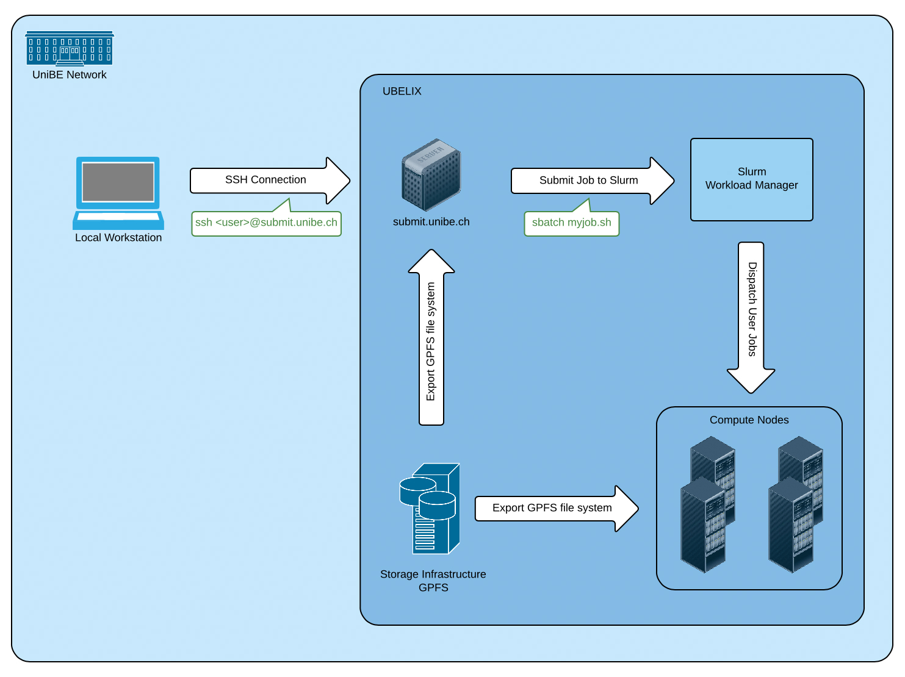

UBELIX - Overview
Description
This page provides a high-level system overview of a HPC cluster such as UBELIX. It describes the different hardware components that constitute the cluster and gives a quantitative list of the different generations of compute nodes in UBELIX.
UBELIX (University of Bern Linux Cluster) is a HPC cluster that currently consists of about 330 compute nodes featuring almost 6‘300 CPU cores and 300‘000 GPU cores and a software-defined storage infrastructure providing ~580 TB of disk storage net. UBELIX is a heterogeneous cluster, meaning UBELIX consists of different generations of compute nodes with different instruction sets. Compute nodes, front-end servers and the storage are interconnected through a high speed Infiniband network. The front-end servers also provide a link to the outside world. UBELIX is used by various institutes and research groups within chemistry, biology, physics, astronomy, computer science, geography, medical radiology and others for scientific research and by students working on their thesis.
High-level system overview

Login Server aka. Submit Server
A user connects to the cluster by logging into the submit host via SSH. You can use this host for medium-performance tasks, e.g. to edit files or to compile programs. Resource-demanding/high-performance tasks must be submitted to the batch queuing system as jobs, and will finally run on one or multiple compute nodes. Even long running compile tasks could fit as a job on a compute instead of running it on the submit host
Batch-Queueing System
On UBELIX we use the open-source batch-queueing system Slurm for executing jobs on a pool of cooperating compute nodes. Slurm manages the distributed resources provided by the compute nodes and is responsible for accepting, scheduling, dispatching, and managing the remote and distributed execution of sequential, parallel or interactive user jobs.
Cluster Partitions (Queues) and their Compute Nodes
Partitions group nodes into logical sets. Nodes in a partition share the same limits. You can choose a partition depending on your jobs requirements (CPUs, memory, runtime). UBELIX provides several different partitions as shown in the following table including the corresponding hardware details of the compute nodes each partition is comprised of:
| Partition name | max runtime (wall clock time) in h | max memory per node | max cores/node | GPU | Node Group | CPU Generation | #Nodes | #Cores | RAM | Local Scratch |
|---|---|---|---|---|---|---|---|---|---|---|
| all | 96h | 243GB | 20 cores | - | hnodes[23-42] jnodes knodes anodes[145-216] |
sandybridge sandybridge ivybridge broadwell |
20 21 36 72 |
16 16 16 20 |
70GB 243GB 117GB 117GB |
250GB 500GB 850GB 850GB |
| empi | 24h | 117GB | 20 cores | - | anodes[003-144] | broadwell | 142 | 20 | 117GB | 850GB |
| long1 | 360h | 86GB | 24 | - | hnode[43-49] | ivybridge | 7 | 24 | 86GB | 500Gb |
| debug | 10m | 117GB | 20 cores | - | anodes[001-002] | broadwell | 2 | 20 | 117GB | 850 |
| gpu2 | 24h | 243GB | 24 | GTX 1080Ti Tesla P100 RTX 2080Ti |
gnode[01-06] gnode[07-08] gnode[09-10] |
broadwell | 6 2 2 |
24 | 243 GB | 850GB |
| gpu-debug | 10m | 243GB | 24 | GTX 1080Ti | gnode[11-12] | broadwell | 12 | 24 | 243 GB | 850GB |
The all partition is the default partition if you do not specify one explicitly.
Storage Infrastructure
A modular, software-defined storage system (IBM Spectrum Scale) provides a shared, parallel file system that is mounted on all frontend servers and compute nodes. Ubelix also provides a limited amount of storage space on the Campus Storage. The different storage locations are summarized in the table below. For more information about the storage infrastructure see here.
| Path | Connection | Availability | Backup | default Quota |
|---|---|---|---|---|
/storage/homefs/$USER |
Network | global | yes | 3TB/user, 15TB/group |
/scratch/ |
Network | global | no | 50TB per space |
/workspace/ |
Network | global | yes | 1TB single user, 5TB group |
-
Due to the limited resources and the potentially long job runtime, access to the long partition must be requested explicitly once. ↩
-
The gpu partition is closed by definition. If you need GPU resources, you have request access to this partition. Write an email to hpc@id.unibe.ch to do so. ↩